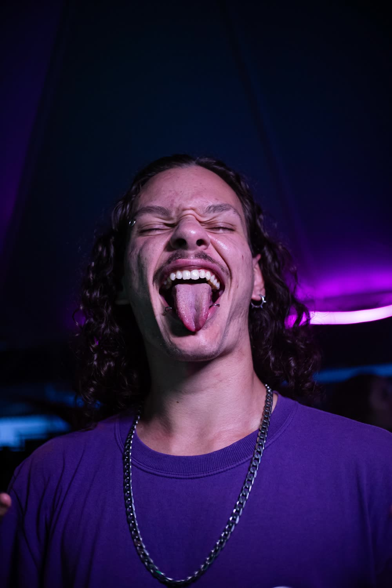
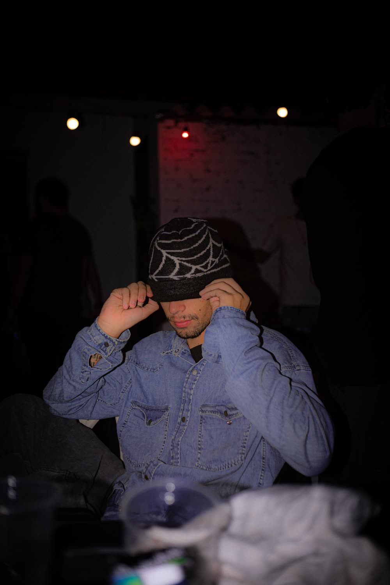

Nome
Rhian
Augusto
Apelido wee
O que eu faço: festas, eventos, motions, edição, captação e roteiro.
Nome
Rhian
Augusto
Apelido wee
Pode me chamar de wee, mas deixe-me apresentar, me chamo Rhian Augusto, nasci em 2003, sou além de filmmaker dançarino de funk e entusiasta dessa cultura, trabalho com edição de vídeo desde 2017 e com captação e roteiro há um pouco mais de um ano, também adoro One Piece.
Festas · Eventos · Motions
01 / 08
Essa é só uma parte. Tem mais festas, eventos e motions no meu Instagram.
Ver no InstagramDo papo ao filme
Você me conta a ideia, a data e onde o vídeo vai passar.
Monto o roteiro e as cenas antes de ligar a câmera.
Capto a festa, o evento ou a cena com olhar de diretor.
Edito, acerto cor e som e entrego no formato de cada tela.
Festas, eventos e motions com cara de filme.
Fotografia






01 / 10